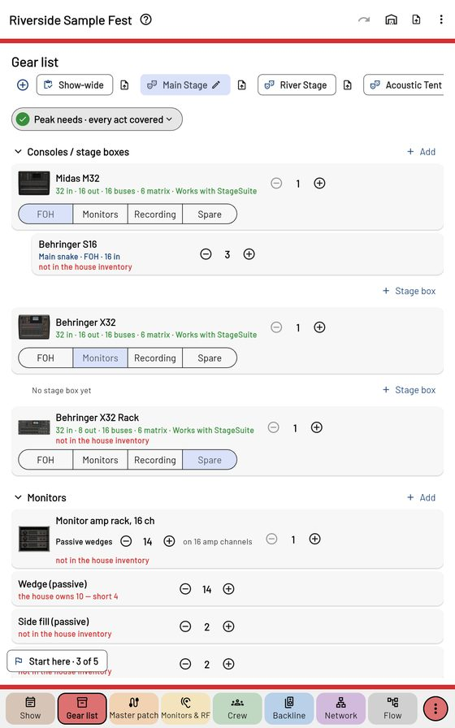

Gear list

Three lists
The chips at the top: Show-wide (the event's pool — what the house sends and what's rented), then each stage's own list. The House icon in the top bar is the house inventory: everything the company owns, set up once. Each has an import icon beside it — a spreadsheet, a CSV or a pasted list; unknown names are asked once and remembered.
What's on a list
Consoles (with their job — FOH, Monitors, Recording, Spare — and "Works with StageSuite" where the app can talk to them; "untested" where it hasn't been tried on a real desk), stage boxes and main snakes, wireless, monitor racks and wedges, then mics, DIs, stands, risers and the rest under More. Each piece is House, Rental or Band, and each row says how it stands against the level above ("the house owns 10 — short 4").
Peak needs
The pill at the top: the most any one act needs of everything, against the list. On Show-wide it adds up every stage's busiest act, day by day — what the company has to send.
⋮ → Rental list (PDF) lists everything marked Rental.